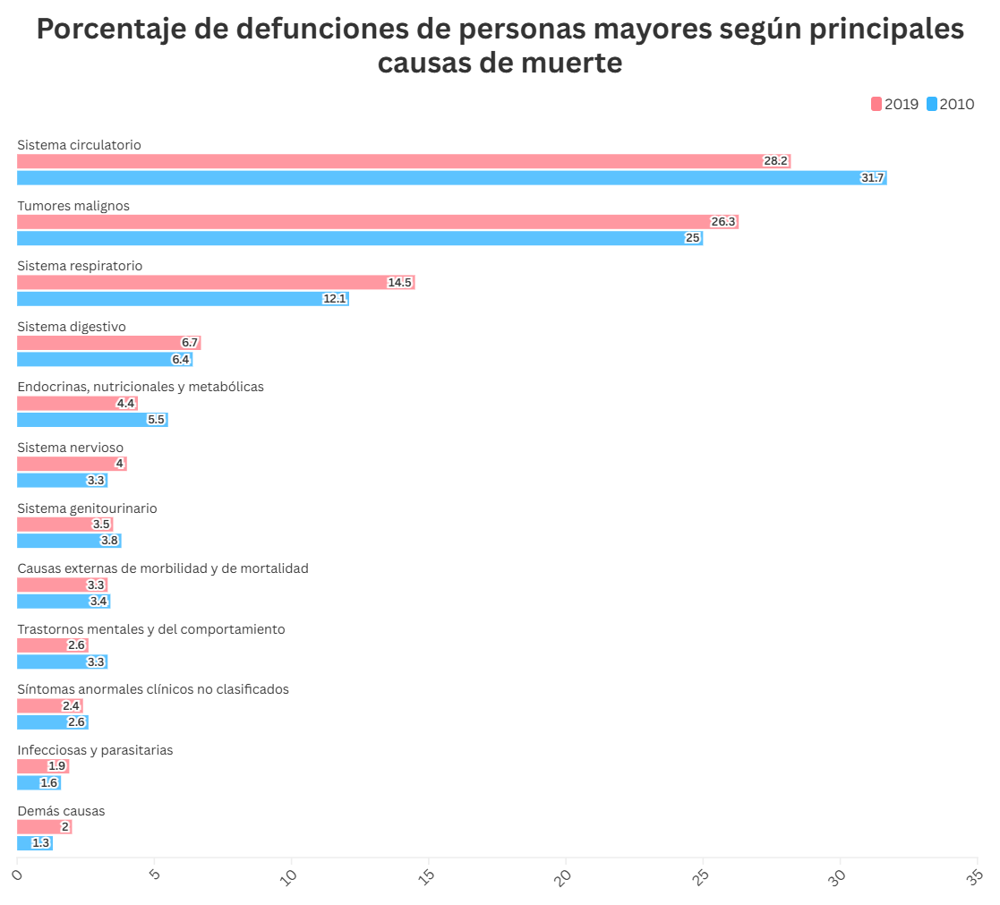

Envejecimiento por Región (2002-2021)
A medida que Chile avanza hacia un futuro más longevo, su población experimenta un envejecimiento notable. La edad promedio ha aumentado gradualmente, incluso, se espera que hacia el 2050, más de la mitad de nuestro país tenga más de 60 años.

Nuevos Desafíos en Salud
El acelerado envejecimiento de la población trae consigo nuevas necesidades en cuanto a la salud de las personas de la tercera y cuarta edad. En este sector de la sociedad, destaca la necesidad de contar con especialistas cardiólogos y oncólogos, pues las enfermedades circulatorias y los tumores malignos son las principales causas de muerte en este tramo etario.
Especialistas por Región
La distribución de oncólogos y cardiólogos no sigue el ritmo de esta evolución demográfica en regiones del extremo sur del país. Regiones del centro de Chile, como la Metropolitana o Valparaíso tienen un acceso a especialistas notablemente mayor a regiones como Los Ríos, Los Lagos, Aysén y Magallanes. El caso de esta última región destaca de las demás porque es la que ha visto un mayor incremento en los últimos años, sin embargo, el acceso a especialistas no ha aumentado para atender las nuevas necesidades de una población envejecida, que además crece rápidamente.

Los oncólogos y cardiólogos son especialistas escasos en todo el país, por lo que para representar una tasa de porcentaje comprensible, se calculó la cantidad de especialistas por cada 100 habitantes del total de la población mayor a 60 años en cada región con los datos del Censo 2017.

Observa cómo la disponibilidad de oncólogos varía a través de las distintas regiones de Chile.
Lo anterior revela que a pesar de que existe un aumento en la esperanza de vida y un crecimiento en la población adulta mayor en todo el país en los últimos 20 años, podría existir un problema en la calidad de vida de estas personas, a causa de la falta de especialistas que traten las enfermedades que podrían surgir a causa de su edad.
El caso de Magallanes
Las brechas en la distribución de especialistas y el envejecimiento acelerado en regiones como Magallanes muestran una falta de recursos en áreas rurales y extremas del país.
¿Por qué los números el aumento de la población mayor es tan grande en esta región? La respuesta está en dos fenómenos que, aunque conocidos, son devastadores cuando se combinan: la migración interna y la baja natalidad. Las familias jóvenes se van, atraídas por mejores oportunidades en grandes centros urbanos. Al mismo tiempo, las nuevas generaciones nacen menos, marcando una transición inevitable hacia una población más envejecida.
Esta es la cara oculta de la vida en una región que ha aumentado su esperanza de vida pero carece de suficientes oportunidades económicas para retener a su gente y enfrenta nuevos desafíos para garantizar la salud de la población adulta mayor que va en aumento.
Son los abuelos y abuelas quienes ahora sostienen la identidad de Magallanes, mientras que sus hijos y nietos construyen sus vidas lejos.